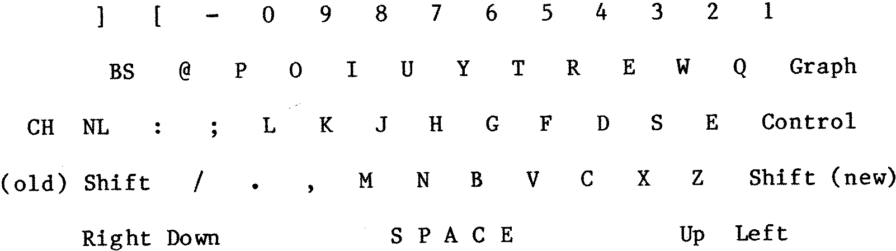

80-Bus News |
July–August 1984 · Volume 3 · Issue 4 |
| Page 27 of 43 |
|---|
In order to obtain the correct bit pattern on the databus the new keys must be inserted in the driver and sense circuitry in appropriate places; after some trial and error, a suitable sequence was worked out which involved some track cutting. The allocation of keys on the keyboard, viewed from the underside is as follows:
(Unshifted key symbols shown)
Mark these on the board and DOUBLE check…
The next stage is to cut some of the sense and driver lines; a sharp scalpel or model-maker’s knife should be used – Check Before Cutting – take out a piece of track about 1 – 2 mm wide – carefully. Each key has 4 pins and with the space bar facing you, they are in the order D, C, B, gap, A. Cut the track leaving the following pins:
| KEY | PIN |
|---|---|
| Z | A |
| W | B |
| Q | C |
| P | C |
| Z | C |
| X | C |
| K | C |
| L | C |
| R | D |
| – | D |
| NL | D |
Having cut the tracks, check again (and use the Elastoplast if necessary!). If all is well, insert the new keys and ensure that 4 pins from each protrude through the board and that the key body clicks into the frame. Now for the spaghetti....
Any fine insulated wire can be used; I used ‘wire-wrap’ wire which happened to be handy. While no need has been found to used twisted pairs of wires, it is important to keep the wiring neat and close to the board. Solder each end carefully and quickly to avoid damaging the keys. Wire exactly as shown below. If you reverse the connections to either of the coils in the key, the sense line pulse produced when the key is operated will be of the wrong polarity and will be ignored.
| Page 27 of 43 |
|---|